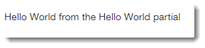

ViewData 是一个容器，用于将数据从 PageModel 传递到内容页面。 ViewData 是具有基于字符串的键的对象字典。 您可以按如下方式向 ViewData 添加项目：
public class IndexModel : PageModel
{
public void OnGet()
{
ViewData["MyNumber"] = 42;
ViewData["MyString"] = "Hello World";
ViewData["MyComplexObject"] = new Book {
Title = "Sum Of All Fears",
Author = new Author { Name = "Tom Clancy" },
Price = 5.99m
};
}
}
ViewData 字典会自动提供给内容页面。 因此，为了引用存储在其中的值，您只需按键引用它们的项目：
@page
@model IndexModel
@{
}
<h2>@ViewData["MyString"]</h2>
<p>The answer to everything is @ViewData["MyNumber"]</p>
使用非字符串值时，您需要在内容页面中将它们转换为正确的类型：
@page
@model IndexModel
@{
var book = (Book)ViewData["MyComplexObject"];
}
<h2>@book.Title</h2>
<p>@book.Author.Name</p>
<p>@book.Price</p>
如果您只想呈现值，则不需要强制转换，并且 ToString() 方法呈现您想要的值。
ViewData 属性
ViewData 属性是在 ASP.NET Core 2.1 中引入的。
使用此属性修饰的 PageModel 属性将作为键以及已分配给它们的任何值自动添加到 ViewData 字典中。
在以下示例中，Message 属性已自动添加到 ViewData：
public class IndexModel : PageModel
{
[ViewData]
public string Message { get; set; }
public void OnGet()
{
Message = "Hello World";
}
}
现在可以通过 Model 属性或 ViewData 字典在视图中访问 Message 属性：
@page
@model IndexModel
@{
}
<h2>@Model.Message</h2>
<h2>@ViewData["Message"]</h>
您应该更喜欢访问内容页面中 Model 的属性，因为您受益于强类型：IntelliSense 和编译时检查。
那么为什么要在模型属性上使用 ViewData 属性呢？ 当使用布局页面时，此功能的真正好处就体现出来了。
ViewData 与布局页面（以及内容页面或布局调用的任何部分页面）共享，
因此该属性可以轻松地将类型化数据从 PageModel 传递到布局页面或部分，而无需将其显式分配给 ViewData 字典。
在上一个示例的基础上，以下代码段是名为 _HelloWorldPartial 的部分：
<p>@ViewData["Message"] from the Hello World partial</p>这是使用部分标签助手从布局页面内调用的：
<partial name="_HelloWorldPartial" />PageModel Message 属性在 OnGet 处理程序中设置，并通过属性分配给 ViewData，这确保它从内容页面传递到布局，再到呈现它的部分：

Razor 页面中的 ViewBag
ViewBag 是 ViewData 字典的包装器，提供了一种使用动态属性而不是基于字符串的索引访问 ASP.NET Core MVC 控制器中的 ViewData 内容的替代方法。
设计决定不在 Razor Pages PageModel 类中包含 ViewBag 属性 ，
但您可以使用 ViewBag 从 Razor 内容页面或布局页面中引用 ViewData 条目：
@page
@model IndexModel
@{
ViewBag.Title = "My Home Page";
}
您可以通过 ViewBag 或 ViewData 在布局页面中访问它：
<title>@ViewBag.Title</title><title>@ViewData["Title"]</title>
这两种方法都将在 title 元素中呈现“我的主页”。
至于您使用哪种方法，ViewBag 语法稍微简洁一些，并且不需要您转换非字符串值，
但是您应该记住 ViewBag 最初没有包含在 PageModel 类中的原因：
来自 ASP.NET Core 团队的 Damian Edwards
ViewBag使用dynamic，它在我们的测试中对使用它的页面或视图的处理产生了可衡量的性能影响。